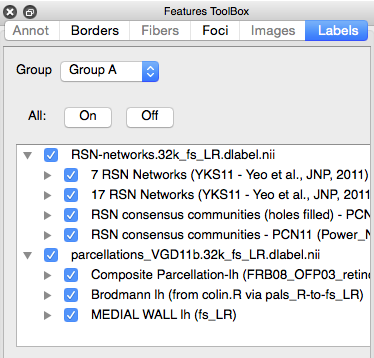

Labels
The Labels Tab in the Features Toolbox
contains options for display and selection of loaded labels (named
colored regions) on brain surfaces and in volumes. When
labels are displayed, labelled regions appear painted on the brain
surface/volume.
- Group: identifies the Label group
for the Active Tab. Tabs assigned to the same Group will
display the same labels with the same attributes.
- All On Off: quickly turn all labels on or off.
